Publications
Google Scholar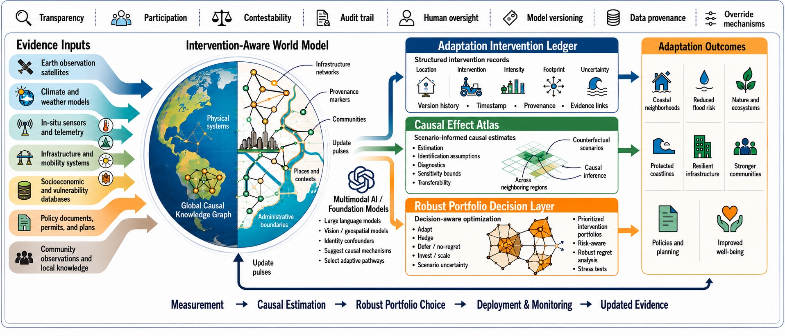
Enlarge figurePCA-OS: A Planetary Climate Adaptation Operating System
Blue Sky Ideas Track work framing climate adaptation as an operating-system problem.
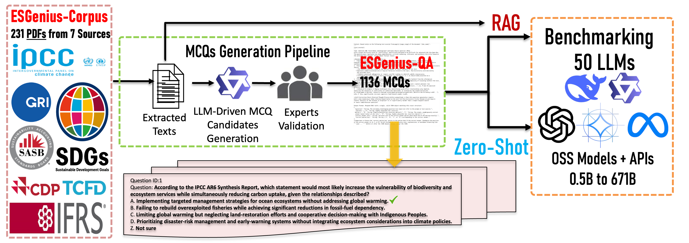
Enlarge figureESGenius: Benchmarking LLMs on ESG and Sustainability Knowledge
Strong accept with Resource Award and Theme Paper Award nominations.
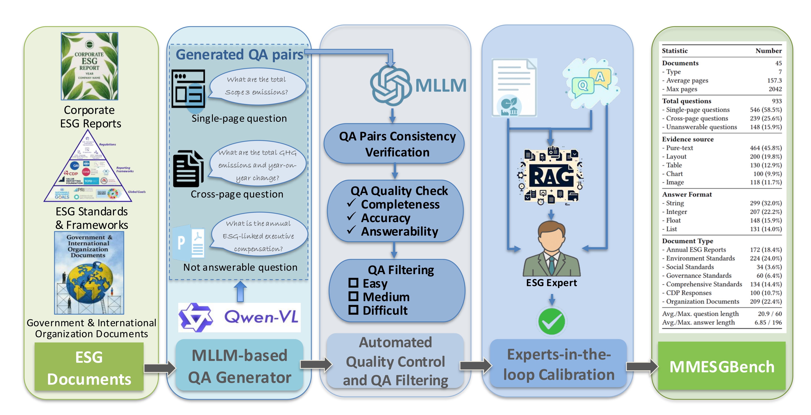
Enlarge figureMMESGBench: Multimodal Understanding and Complex Reasoning for ESG Tasks
Datasets Track work connecting multimodal reasoning with ESG evaluation.
An Expert-in-the-Loop Design Utilising Knowledge Graphs to Prompt LLMs in Professional Writing
Knowledge-graph-guided design for LLM-assisted professional writing. Proceedings link forthcoming.
SP^2DPO: An LLM-assisted Semantic Per-Pair DPO Generalization
Submitted to ICML 2026. Preference-optimization work replacing a single global DPO temperature with auditable semantic per-pair schedules.
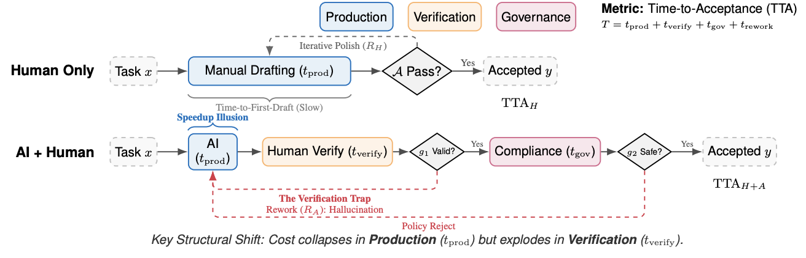
Enlarge figureHuman-AI productivity claims should be reported as time-to-acceptance under explicit acceptance tests
Submitted to ICML 2026 Position Track. Work reframing AI productivity evidence around explicit acceptance tests and time-to-acceptance reporting.
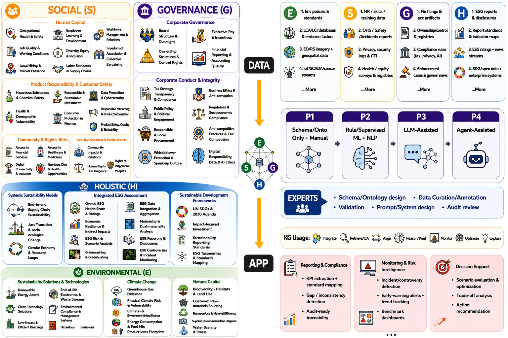
Enlarge figureKG4ESG: The ESG Knowledge Graph Atlas
Submitted to EMNLP 2026. Atlas-style survey of ESG knowledge graph research, organizing the field around Data-to-KG and KG-to-App pipelines.
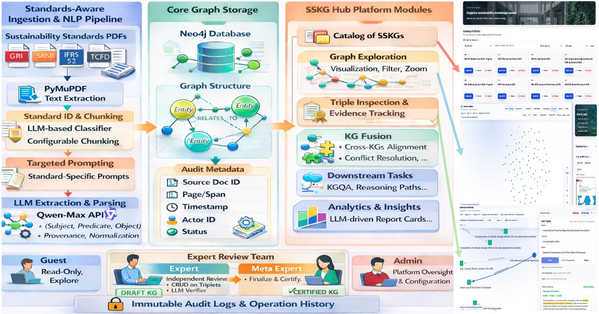
Enlarge figureSSKG Hub: An Expert-Guided Platform for LLM-Empowered Sustainability Standards Knowledge Graphs
Submitted to EMNLP 2026 Demo Track. Interactive platform for transforming sustainability standards into auditable knowledge graphs with expert review and certification.
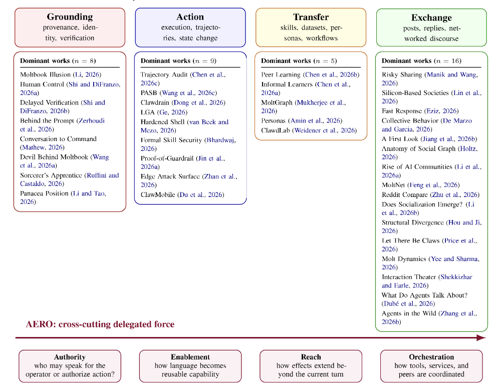
Enlarge figureOpenClaw as Language Infrastructure: A Case-Centered Survey of a Public Agent Ecosystem in the Wild
Under review for EMNLP 2026 (ARR March). Case-centered analysis of a public agent ecosystem, framing agentic language use as executable, persistent infrastructure.
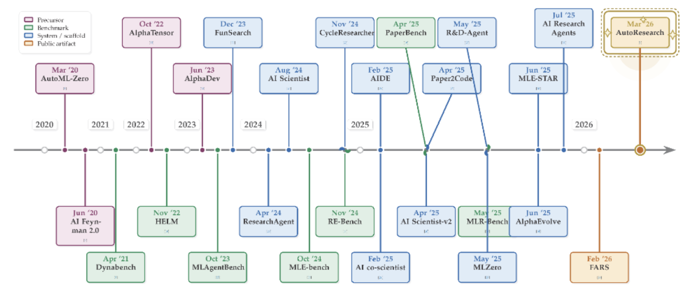
Enlarge figureThe AutoResearch Moment: From Experimenter to Research Director
Submitted to EMNLP 2026 (ARR May). Position paper on agentic research automation, claim governance, and the shift from experiment execution to research direction.
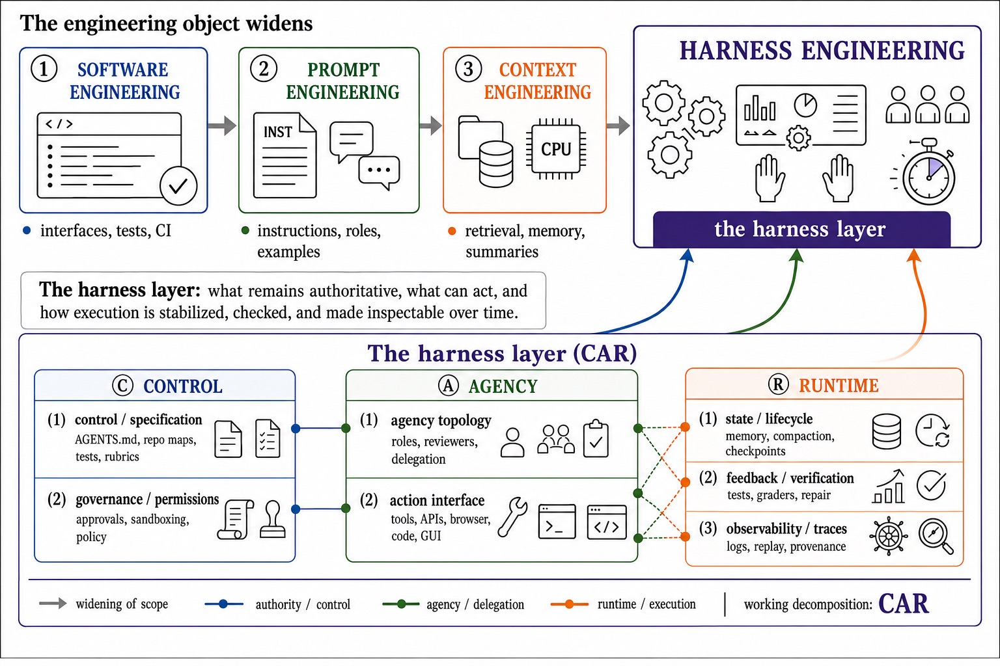
Enlarge figureHarness Engineering for Language Agents: The Harness Layer as Control, Agency, and Runtime
Submitted to EMNLP 2026 (ARR May). Framework for the extra-model layer that governs language-agent control, action interfaces, state, and runtime reliability.
ESGlass: Glass-Box ESG and Sustainability Reports
Submitted to ACMMM 2026 BNI Track. Glass-box reporting work for ESG and sustainability evidence, traceability, and report-generation support.
The Synthetic Media Exchange: When Lineage Becomes Currency
Submitted to ACMMM 2026 BNI Track. Multimedia-systems proposal treating synthetic-media lineage, provenance, and exchange as core infrastructure.
From Prompts to Portfolios: AI Agents as Agentic Multimedia Firms
Submitted to ACMMM 2026 BNI Track. Agentic multimedia work framing AI agents as firms that compose prompts, assets, workflows, and portfolios.
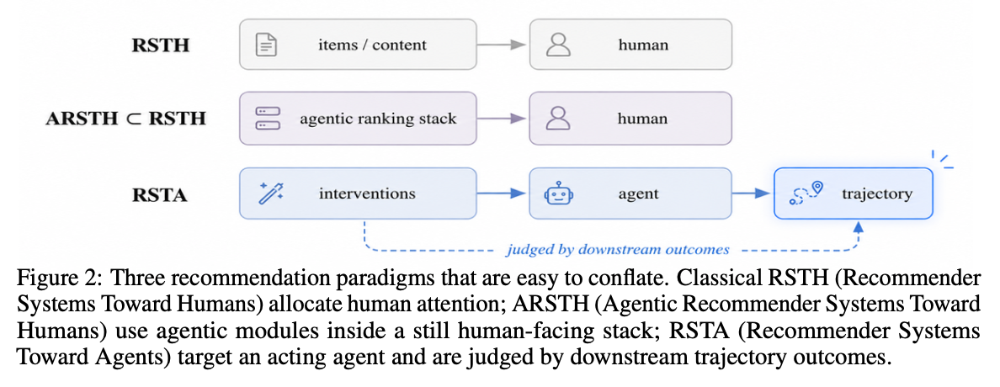
Enlarge figureRecommender Systems Should Now Be Designed Towards Agents
Submission-stage position paper arguing for agent-facing recommendation layers that rank tools, interventions, oversight actions, and downstream trajectories.
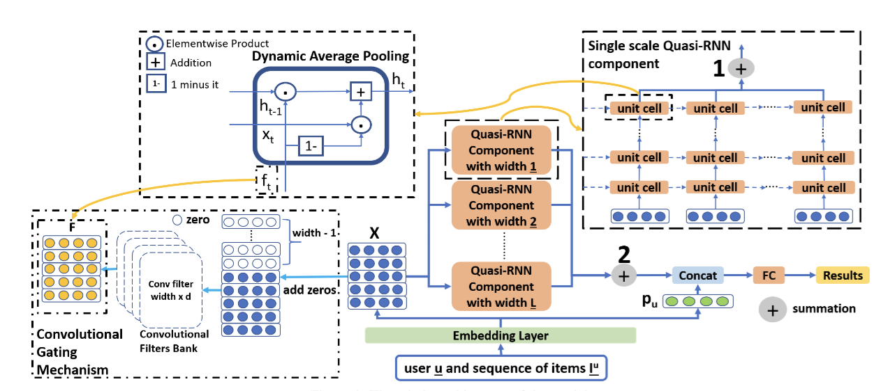
Enlarge figureMulti-Scale Quasi-RNN for Next Item Recommendation
Sequential-recommendation work exploring multi-scale quasi-recurrent neural networks for next-item prediction.